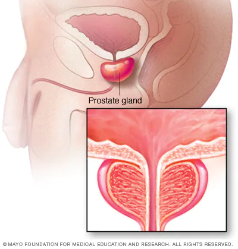

Medica Chat
Hi. This is Medica chatbot. How can I help you?
Thryoid Cancer
Overview
Prostate cancer is cancer that occurs in the prostate. The prostate is a small walnut-shaped gland in males that produces the seminal fluid that nourishes and transports sperm.
Prostate cancer is one of the most common types of cancer. Many prostate cancers grow slowly and are confined to the prostate gland, where they may not cause serious harm. However, while some types of prostate cancer grow slowly and may need minimal or even no treatment, other types are aggressive and can spread quickly.
Prostate cancer that's detected early — when it's still confined to the prostate gland — has the best chance for successful treatment.
Symptoms
Prostate cancer may cause no signs or symptoms in its early stages.
Prostate cancer that's more advanced may cause signs and symptoms such as:
- Trouble urinating.
- Decreased force in the stream of urine.
- Blood in the urine.
- Blood in the semen.
- Bone pain.
- Losing weight without trying.
- Erectile dysfunction.
When to see a doctor
Make an appointment with your doctor if you have any persistent signs or symptoms that worry you.
Causes
Doctors know that prostate cancer begins when cells in the prostate develop changes in their DNA. A cell's DNA contains the instructions that tell a cell what to do. The changes tell the cells to grow and divide more rapidly than normal cells do. The abnormal cells continue living, when other cells would die.
The accumulating abnormal cells form a tumor that can grow to invade nearby tissue. In time, some abnormal cells can break away and spread (metastasize) to other parts of the body.
Risk factors
Factors that can increase your risk of prostate cancer include:
- Older age. Your risk of prostate cancer increases as you age. It's most common after age 50.
- Race. For reasons not yet determined, Black people have a greater risk of prostate cancer than do people of other races. In Black people, prostate cancer is also more likely to be aggressive or advanced.
- Family history. If a blood relative, such as a parent, sibling or child, has been diagnosed with prostate cancer, your risk may be increased. Also, if you have a family history of genes that increase the risk of breast cancer (BRCA1 or BRCA2) or a very strong family history of breast cancer, your risk of prostate cancer may be higher.
- Obesity. People who are obese may have a higher risk of prostate cancer compared with people considered to have a healthy weight, though studies have had mixed results. In obese people, the cancer is more likely to be more aggressive and more likely to return after initial treatment.
Complications
Complications of prostate cancer and its treatments include:
- Cancer that spreads (metastasizes). Prostate cancer can spread to nearby organs, such as your bladder, or travel through your bloodstream or lymphatic system to your bones or other organs. Prostate cancer that spreads to the bones can cause pain and broken bones. Once prostate cancer has spread to other areas of the body, it may still respond to treatment and may be controlled, but it's unlikely to be cured.
- Incontinence. Both prostate cancer and its treatment can cause urinary incontinence. Treatment for incontinence depends on the type you have, how severe it is and the likelihood it will improve over time. Treatment options may include medications, catheters and surgery.
- Erectile dysfunction. Erectile dysfunction can result from prostate cancer or its treatment, including surgery, radiation or hormone treatments. Medications, vacuum devices that assist in achieving erection and surgery are available to treat erectile dysfunction.
-
Choose a healthy diet full of fruits and vegetables. Eat a variety of fruits, vegetables and whole grains. Fruits and vegetables contain many vitamins and nutrients that can contribute to your health.
Whether you can prevent prostate cancer through diet has yet to be conclusively proved. But eating a healthy diet with a variety of fruits and vegetables can improve your overall health.
- Choose healthy foods over supplements. No studies have shown that supplements play a role in reducing your risk of prostate cancer. Instead, choose foods that are rich in vitamins and minerals so that you can maintain healthy levels of vitamins in your body.
- Exercise most days of the week. Exercise improves your overall health, helps you maintain your weight and improves your mood. Try to exercise most days of the week. If you're new to exercise, start slow and work your way up to more exercise time each day.
- Maintain a healthy weight. If your current weight is healthy, work to maintain it by choosing a healthy diet and exercising most days of the week. If you need to lose weight, add more exercise and reduce the number of calories you eat each day. Ask your doctor for help creating a plan for healthy weight loss.
-
Talk to your doctor about increased risk of prostate cancer. If you have a very high risk of prostate cancer, you and your doctor may consider medications or other treatments to reduce the risk. Some studies suggest that taking 5-alpha reductase inhibitors, including finasteride (Propecia, Proscar) and dutasteride (Avodart), may reduce the overall risk of developing prostate cancer. These drugs are used to control prostate gland enlargement and hair loss.
However, some evidence indicates that people taking these medications may have an increased risk of getting a more serious form of prostate cancer (high-grade prostate cancer). If you're concerned about your risk of developing prostate cancer, talk with your doctor.
Prevention
You can reduce your risk of prostate cancer if you: